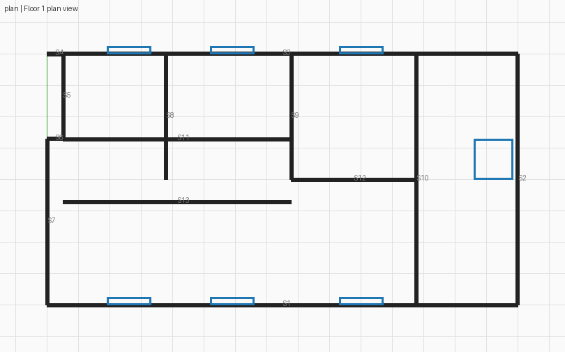
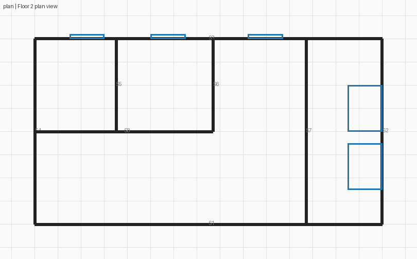
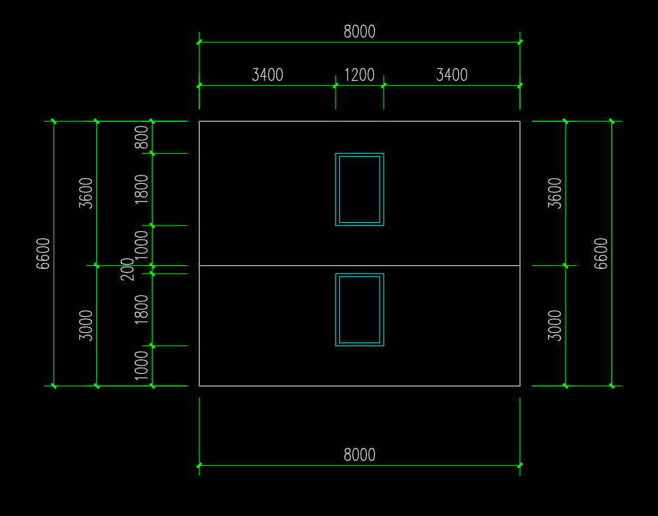
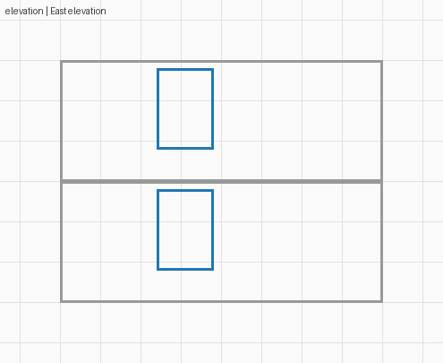
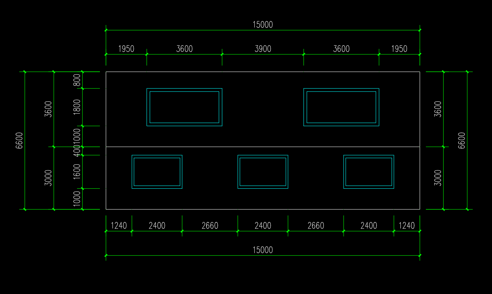
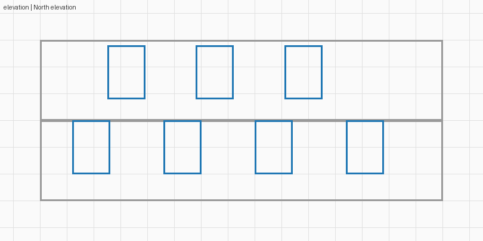
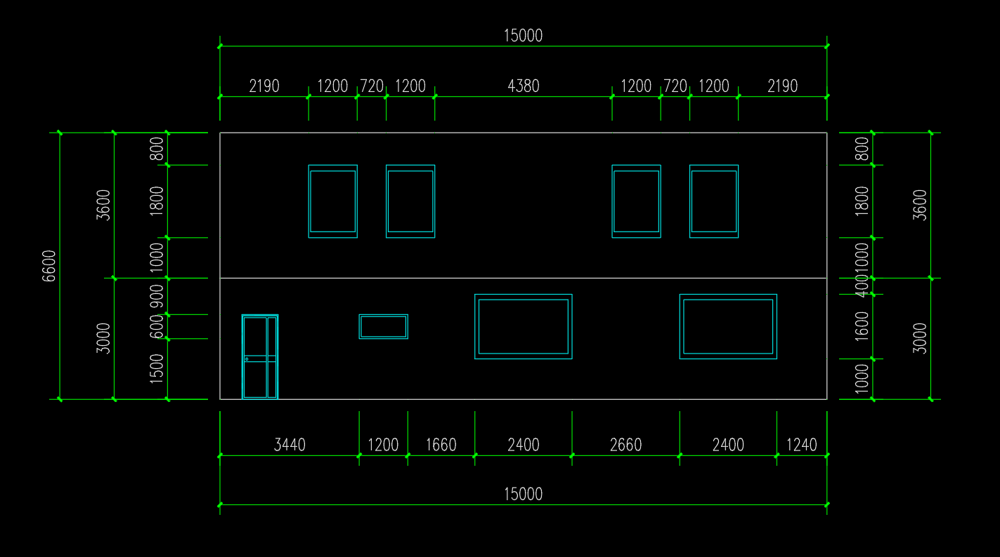
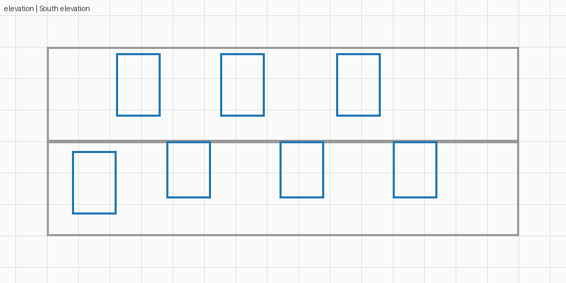
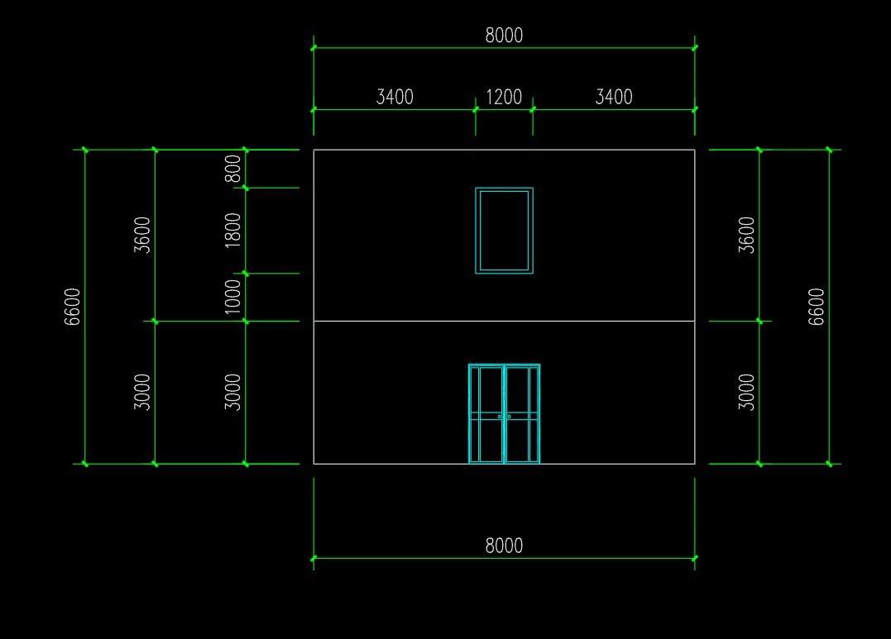
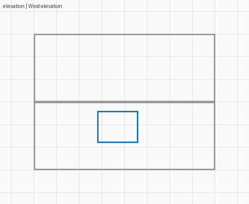

1f_view


本次没有生成可用的新 BIM。读图在探索模式下被技术接受，但原图对照发现隔墙、走廊和门洞信息错误；该接受状态不证明保真。校正首请求 600 秒超时，第二请求因已知输入失真被中断。
六张原始平立面 → Haiku 订阅读图 → 保存、检查与投影 → Sonnet 订阅校正（未完成）。不复制历史观测，不把 GT 输入生成。
实验说明 · 完整记录 · 读图问题定位 · 原始检查 · 统一灰色的交互查看示例
重点看 1F：原图上下各三间与贯通走廊，在新投影中已发生实质变化；这不是尺寸容差问题。以下是新观测的诊断展示，不能当作建筑模型验收。










